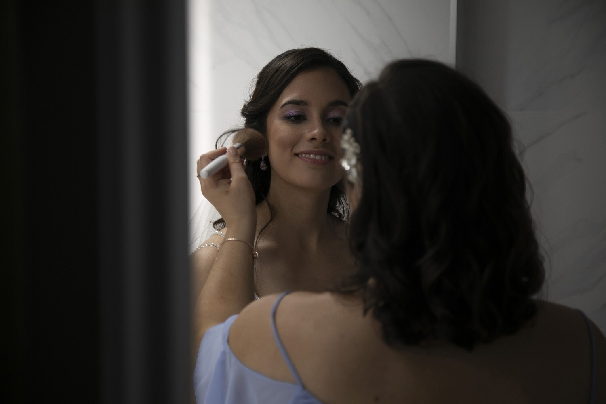

About me
Currently a second year student in Graphic Design at Algonquin College, Maya Schultz has always deeply enjoyed creative pursuits. With this joy for creating art wherever possible, Maya Schultz uses makeup artistry as a method to practice her art and create long lasting connections with her clients.
